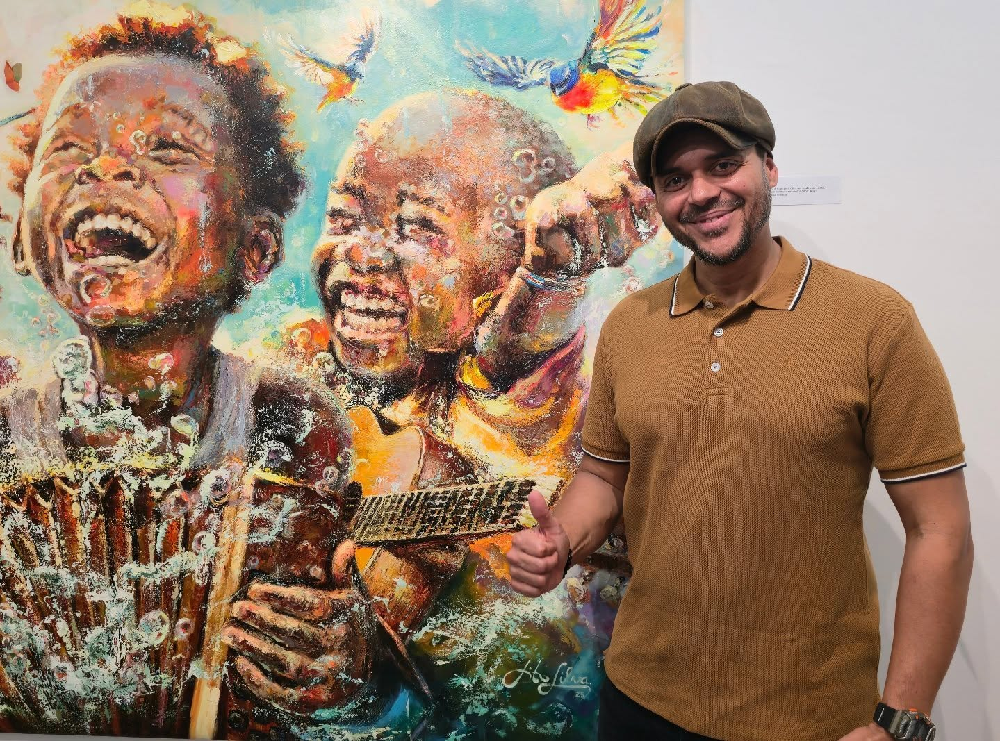

Galeria · Lito Silva
Arte que merece tempo.
Pinturas a óleo originais expostas nas paredes da sala de refeições do Cachupa Rst.

O artista
Lito Silva
Pintor cabo-verdiano cujas telas a óleo retratam com calor, cor e emoção a vida quotidiana, as gentes e a alma de Cabo Verde.
Exposição permanente
A chegar
brevemente.
Coleção de sala
Novas fotografias das artes em preparação.
Estamos a preparar novas fotografias das pinturas originais de Lito Silva expostas na nossa sala. Enquanto a coleção digital é renovada, convidamo-lo a vê-las ao vivo à mesa.
Conhecer a nossa casa